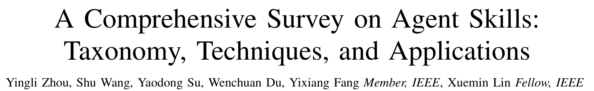
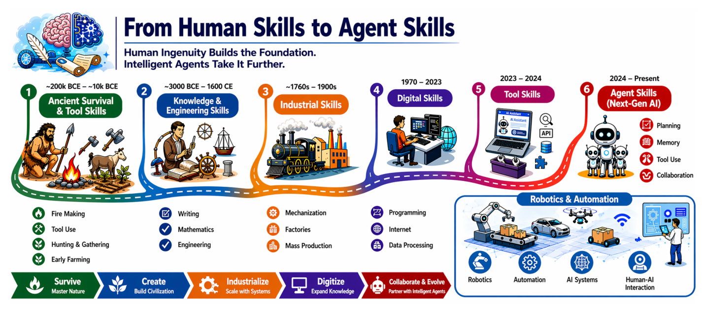
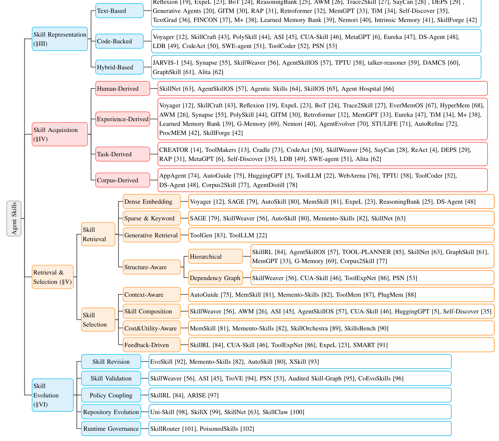
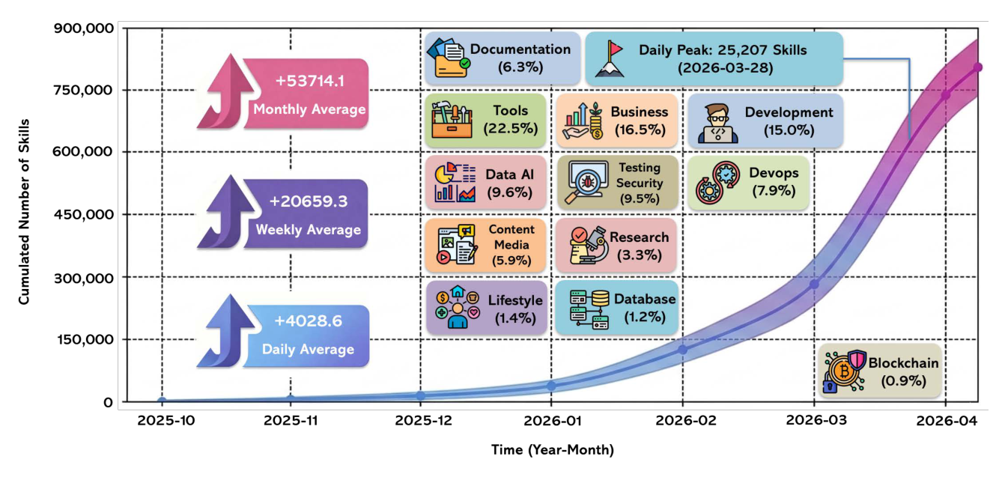

本文看点
01
首篇Agent Skill全景综述
02
四阶段生命周期框架
03
共享技能可信是隐忧
01
PAPER INFO
论文信息
【论文题目】A Comprehensive Survey on Agent Skills: Taxonomy, Techniques, and Applications
【论文链接】https://arxiv.org/abs/2605.07358
【资源汇总】https://github.com/JayLZhou/Awesome-Agent-Skills
【作者团队】香港中文大学（深圳）

— 论文题头
这是一篇系统性综述（SoK / survey），来自香港中文大学（深圳）。它是第一篇把"Agent Skill"当成一个独立概念来系统梳理的综述。我们这个号此前解读过一大批 Agent Skill 的安全工作，这篇正好补上了那张缺失的"全领域地图"。因为是综述类文章，本文按它的框架逐层拆给你看。
02
OVERVIEW
导读
先看这张一眼就点题的图：

— 图1：从人类技能到 Agent 技能的演进。人类的技能从远古的生存与工具技能，一路走到知识与工程、工业化、数字化，如今 AI 时代来到"Agent 技能"这一站：规划、记忆、工具使用、协作被打包成可复用的能力
论文的出发点是一个很实在的问题，叫"过程鸿沟（procedural gap）"：现在的 Agent（OpenClaw、Claude Code 这类）每接一个任务，都要从零把"这事该分几步、每步调用什么、失败了怎么办、结果怎么验"重新推理一遍。这种"每次都从头想"导致了脆弱、慢、不可靠。Agent Skill 就是来填这个鸿沟的：把一段做事的流程沉淀成可复用的过程化知识，让 Agent 直接调用，而不是每次重新发明。 作者有个很妙的比喻，技能就是 Agent 的"肌肉记忆"：把反复用到的操作流程从"每次现推"变成"下意识能做"。
这篇综述梳理了三年（2023 到 2026）里 116 篇代表性论文，把整个领域组织成一套清晰的框架。下面顺着它讲。
03
WHY
先厘清：Skill、Tool、MCP 到底有什么区别
这是全文最该先搞懂的一点，也是很多人容易混的。三者解决的是完全不同层次的问题：
- Tool（工具）：暴露一个原子能力，回答"能做什么"。一个搜索 API 能搜索，但它不告诉你什么时候该搜、搜完怎么用。
- MCP：解决的是互操作，回答"怎么统一地触达这些能力"，让各家工具能用一套协议被发现和调用。
- Skill（技能）：解决的是过程，回答"怎么把一串工具调用编排成一个靠谱的工作流"。
换句话说，工具给你零件、MCP 给你接口，而技能给你的是"把零件按什么顺序、在什么条件下、怎么组装成成品，还要怎么验收"的那份说明书。论文给了技能一个形式化定义 S =（M, R, C）：M 是主指令文档（怎么做），R 是配套资源（参考文档、模板、可执行脚本），C 是适用条件（什么时候该用它）。正是这份"带条件、带资源、可复用"的过程知识，把技能和单纯的工具、协议区分开了。
04
FRAMEWORK
四阶段生命周期：这张分类树是全文骨架
综述把整个领域组织成技能的四阶段生命周期，这张分类树是全文的地图：

— 图2：Agent Skill 的四阶段分类框架。一，技能表示（按资源形态分文本型、代码型、混合型）；二，技能获取（人来写、从经验蒸馏、按任务生成、从语料挖）；三，检索与选择（检索：稠密/稀疏/生成式/结构感知；选择：上下文感知、技能组合、成本效用感知、反馈驱动）；四，技能演化（修订、验证、策略耦合、仓库演化、运行时治理）
四个阶段是一条完整链路：表示决定技能长什么样、怎么打包（纯文本说明？带可执行脚本？）；获取决定技能从哪来（专家手写、从 Agent 自己的历史经验里蒸馏、按当前任务临时生成、或从文档语料里挖）；检索与选择决定海量技能库里怎么把对的那个调出来用；演化决定技能怎么随环境变化被修订、验证、退役。作者反复强调：这四步是紧耦合的，一环出问题会顺着链条传下去，获取时质量把关不严，检索就会被噪声淹没，最终编排就会失灵。
05
INSIGHTS
两个非显然的判断，比分类本身更值得记
综述真正有洞察力的地方，是它在梳理中提炼出的几个反直觉判断。挑两个最有价值的说。
其一，检索技能，根本不是检索文档。 直觉上"从技能库找技能"很像 RAG 找文档，但作者点破：技能是可执行单元，调用它会真的触发工具调用、产生副作用、消耗成本，所以"语义相似"远远不够。一个技能和你的任务描述再相关，如果它的前置条件不满足、和已装技能冲突、或者代价高得离谱，它就是不能用。因此这个领域正在从"一次性的相关度匹配"转向"多信号、看得见执行代价"的候选召回，不光问"哪个技能相关"，还要问"哪个技能在当前状态下真能跑通、值得跑"。这对做检索的人是个重要提醒：把技能当文档检索，方向就错了。
其二，技能库最大的病，是"只进不出"。 作者观察到一个很扎心的不对称：现有系统很擅长往技能库里加技能，却几乎不会安全地重写和退役技能。加一个新技能很容易，但要判断一个旧技能已经过时、要不要删、删了会不会连累依赖它的别的技能，这些"清理"动作几乎没人做好。结果就是技能库像堆技术债一样越堆越大，低质量、过时的技能不断累积，让检索越来越噪、编排越来越不可靠。一句话，这个领域"会长个子，不会新陈代谢"。
06
SCALE
生态在爆发，而最大的隐忧是"可执行不等于可信"
先感受一下这个领域的膨胀速度：

— 图3：某技能平台上技能数量随时间的累积曲线。到 2026 年 4 月已逼近 90 万个技能，月均新增 5.3 万、日均新增 4028、单日峰值 25207 个（2026-03-28）。按类别，工具类占 22.5%、商业 16.5%、开发 15%、数据与 AI 9.6%、测试与安全 9.5%
技能正以每天几千个的速度涌进公开平台，这既是繁荣，也埋下了这篇综述反复点到的最大隐忧：一个共享技能可以是可执行的，但未必是可信的。作者把这归到"运行时治理（Runtime Governance）"这个阶段，并直接点名了 PoisonedSkills 这类工作：第三方的技能文档里可以藏着恶意逻辑，被 Agent 当成可信的操作指南照着执行。当技能能被任何人发布、被 fork、被自动同步进你的 Agent，"这个技能从哪来、能不能信、出了事谁负责"就成了没解决的问题。作者明确说，来源追溯、污染检测、权限边界、技能退役这些治理机制，是当前整个领域最薄弱的一环，否则一个不断演化的技能生态，只会不断累积可执行的风险。
07
TAKEAWAYS
启发与点评
对研究者：这篇综述的价值，在于它给一个正在野蛮生长的领域立了一套统一的坐标系。它最该被记住的贡献不是罗列了多少方法，而是那个"表示→获取→检索选择→演化"的生命周期视角，以及几个反直觉的判断：技能检索不是文档检索（要看执行代价）、技能库"只进不出"是通病、可执行不等于可信。这些判断直接指向了清晰的选题空白：怎么做执行感知的技能检索、怎么给技能库做"新陈代谢"（安全地退役旧技能）、怎么给共享技能建立来源与信任机制。作者还给了统一 Schema、资源感知的联合优化、非平稳环境下的技能库演化等具体方向，都是现成的坑。
对从业者：两个能立刻用的判断。其一，别把 Agent Skill 当成"更好用的工具"：它是一份带适用条件的过程说明书，装之前要看清它假设了什么前置状态、会调用哪些能力、和你已装的技能会不会打架，而不是看它名字相关就装。其二，装第三方技能要有供应链意识：技能可以像开源包一样被 fork、被同步，一个"可执行"的技能背后可能藏着你没审过的逻辑，来源不明、权限过大的技能要格外警惕。
一点观察：把这篇放进我们持续追踪的 Agent Skill 安全脉络里看，它给了那些散落的安全工作一张完整的底图。我们此前解读过恶意技能检测、跨技能组合攻击、技能凭据泄露、恶意技能实测等一系列工作，它们其实全都落在这张分类树最后那个"运行时治理"的格子里。这张地图揭示了一个清晰的态势：Agent Skill 的功能生态在指数级膨胀，而它的安全与治理还停在最原始的阶段。软件供应链安全走过的路（从"能用就行"到 SBOM、签名分发、来源审计），很可能就是 Agent 技能生态接下来要补的课。谁先把"技能的可信"这件事做扎实，谁就握住了这条正在成型的新供应链的地基。